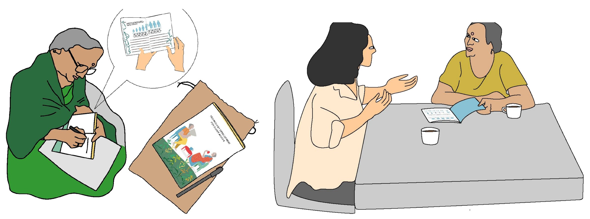
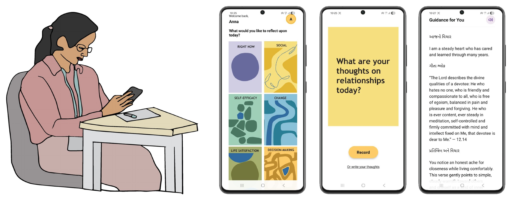
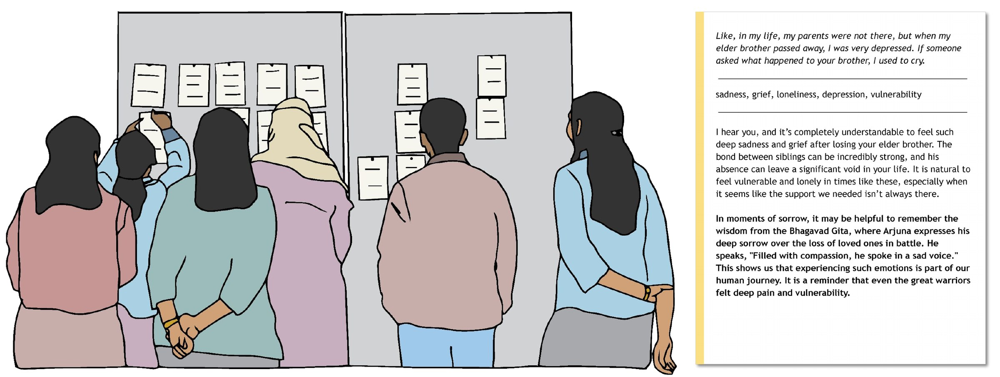
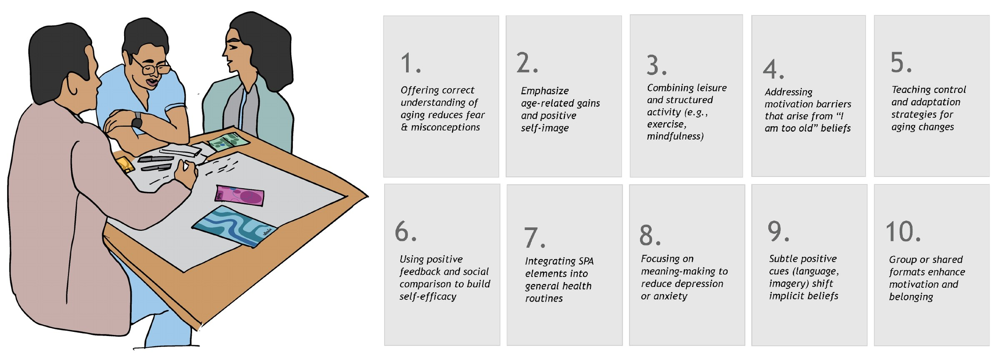

materializing self-perceptions of aging for design
Self-perceptions of aging are linked to older adults’ emotional, cognitive and physical wellbeing, and interventions can shift them. Yet they are rarely turned into concrete material that designers can work with. In HCI, age is often treated as a demographic or biomedical variable, not as something multidimensional and changeable.
We asked how self-perceptions of aging could be translated into reflection probes and design materials that HCI practitioners can use, and how practitioners would use them to interpret older adults’ situations and generate ideas for wellbeing.
SPA design materials
Three connected materials, built from fieldwork with 24 older adults and from intervention research, used in a workshop with HCI practitioners.
The materials start from part one: probe booklets and interviews with 24 older adults across private homes, assisted living and old age homes. We analysed the interviews for recurring emotional expressions and selected 25 that came up often, such as frustration, nostalgia, concern, happiness and acceptance.

ii.
the self-reflection tool
The tool from part two (DIS 2026 pictorial) was the first material. A person selects a SPA aspect, records a short reflection and receives guidance that combines an empathetic acknowledgement, a short reading of a verse and a few concrete suggestions. Practitioners used it for their own reflections, so they could feel its tone and its limits before thinking about older adults.

tonePractitioners found the guidance gentle, “supportive and calming”, and recognised familiar ideas such as seva, “something we subconsciously know.”
limitsWith repeated use, some guidance sounded alike, “like horoscopes”, and some responses followed keywords, reacting to “reluctance” in “I am not reluctant to change.”
requestsThey asked for voice input, “my parents will not type”, clearer prompts, and clarity on who is speaking: a friend, an expert or a divine voice.
iii.
empathic reflection cards
We paired each of the 25 emotions with an older adult’s quote and ran the quote through the tool. Each card combines the quote, the emotion labels drawn from it, and the guidance the tool returned.

particular peopleReading the cards moved the talk from “older adults” in general to particular situations: a woman whose sewing machine was taken without asking, a man who “starts crying when someone asks about him.”
dilemmasPractitioners began to name dilemmas such as being taken for granted, managing grief alone, or fearing dependency.
unique peopleA week later, one wrote that people who are aging “have some shared experiences but are unique human beings with their own preferences and perspectives.”
iv.
ten aspiration cards
A systematic review of interventions shows how self-perceptions of aging can change. We distilled its findings into ten cards, each an evidence-based direction a design can aim for.

leversTeams chose aspirations such as “using positive feedback and social comparison to build self-efficacy” and treated them as concrete levers, not slogans.
vocabularySPA gave them words for situations: one group linked feeling useless after retirement to self-value and self-efficacy; another read the sewing-machine story through agency and decision-making.
v.
a workshop at IndiaHCI 2025
Ten HCI practitioners spent 90 minutes with the materials at IndiaHCI 2025: an orientation on aging in India and SPA, individual use of the tool, group work with the two card sets, and small-team ideation of services, spaces and technologies. They also questioned the premise.
existing practiceMany older adults already have spiritual practices and communities, such as online satsang groups that work like “therapy”. What would an AI tool add for them?
relianceSome older adults are “very averse to reading and writing”, and some people already talk to an AI every night, a sign of possible dependency.
listeningSome grandparents “do not want to answer what you ask, they just want to speak what they want to say.”
vi.
what practitioners designed
In small teams, practitioners combined the stories with aspirations and sketched concepts. They were varied, but each was grounded in SPA concerns and in Indian social and spiritual life.
speak or askA dual-mode support system where older adults can speak freely or ask for concrete suggestions, with nostalgia-based experiences such as revisiting familiar places.
be the supportVolunteering to “be the support you do not have”, as a response to loneliness.
identityCommunity activities that affirm identity, instead of a single app.
belongingChanges to the home, support across generations, and taking part in satsang or group activities, to build confidence and belonging.
vii.
back to older adults
We turned six of the practitioners’ ideas into illustrated concept probes and discussed them with 12 older adults in India. They chose the concepts that mattered to them, said where the concepts matched their lives, and changed them. The analysis is in progress.
what happens next
The workshop showed that materials built from older adults’ words and from intervention evidence help practitioners move from general talk about aging to specific readings of real situations. A paper on how designers and older adults reinterpret SPA through these materials is in preparation.